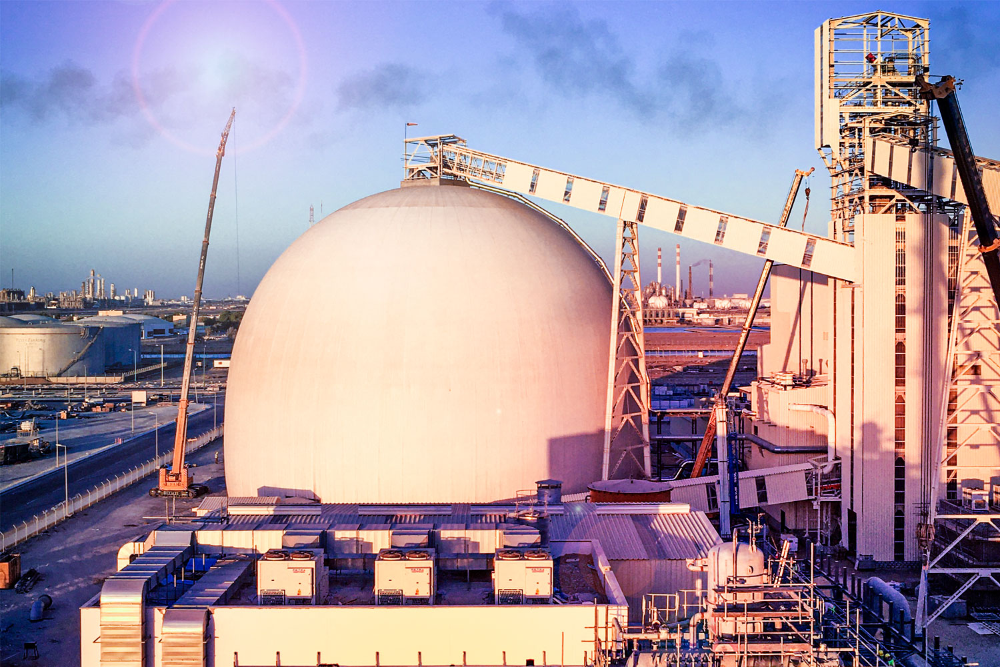
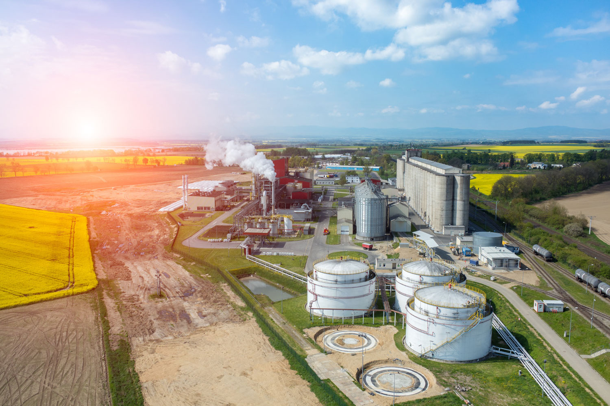

INDUSTRIA
AGROINDUSTRIA
La agroindustria involucra toda la cadena de producción agrícola y ganadera, basándose en la sostenibilidad y la optimización de coste. TSK posee una dilatada experiencia como experto internacional en los procesos integrales del sector.
La flexibilidad y la política selectiva de las soluciones tecnológicas garantizan la calidad del producto en el ámbito industrial.

BIOCOMBUSTIBLE
Las plantas de producción de biocombustibles utilizan como materia prima aceites de origen vegetal (biodiesel) o productos vegetales ricos en azucares (bioetanol) para producir biodiesel o bioetanol mediante un proceso físico-químico de transesterificación o dilución, conversión y fermentación.
